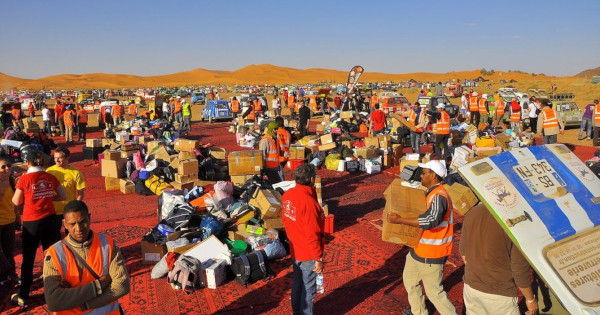

Le teaser
Le 4L Trophy, présentation du rally
Le 4L Trophy est un raid automobile humanitaire reliant la France et le Maroc dans le but
d'aider les plus démunis. Créé par Jean-Jacques Rey en 1997, il est organisé par
l'entreprise Desertours en partenariat avec l'École supérieure de commerce de Rennes.
Le raid est organisé annuellement et fait participer près de 3000 étudiants de 18 à 28
ans. Les participants disputent une course d'orientation d'environ 6 000 km réalisée
exclusivement en Renault 4L, traversant la France, l’Espagne et le Maroc. Le
départ a lieu à Biarritz, puis les équipages traversent librement l'Espagne jusqu'à
Algésiras et prennent le ferry pour le Maroc, où les épreuves du raid commencent. Le
parcours présente plusieurs étapes dont certaines autour des dunes de Merzouga et dans
l'Atlas, pour mener jusqu'à Marrakech. Les participants roulent la journée, en se
guidant avec un roadbook et une boussole et se rassemblent le soir dans un bivouac prévu
par l'organisation.
Une aventure humanitaire
Au delà de la compétition, cet événement est avant tout une aventure humaine, sportive et solidaire pour les étudiants. Depuis toujours, le Raid 4L Trophy intègre une démarche solidaire et éco-citoyenne qui font de ses actions une partie intégrante de l’aventure, notamment par la collaboration avec l’association Enfant du Désert pour laquelle les étudiants collectent des fournitures scolaires afin d’aider les enfants marocains dans leur scolarisation. Ce projet a déjà permis d’aider plus de 25 000 enfants du Sud du Sahara marocain.
Cette action soutient aussi la Croix Rouge Française :
En 2018, 14 tonnes de nourriture ont été collectées, soit plus de 20 000 repas servis.

L'objectif principal
L'objectif est d'atteindre Marrakech pour remettre des fournitures scolaires et sportives ainsi que des denrées non périssables aux enfants les plus démunis du Maroc. Une fois sur place, celles-ci seront redistribuées par les équipes de l’association Enfants du Désert.
Le 4L Trophy 2021
Le 4L Trophy 2021 est la 24ème édition du rally. Elle se déroulera sur 10 jours, les dates sont du 18 au 28 février 2021.
Programme
17 & 18 février : village départ à Biarritz et vérifications téchniques et administratives, départ vers Algésiras (Espagne)
19, 20 & 21 février : Accueil à Algésiras puis traversée du Détroit de Gibraltar
22 au 26 février : 6 étapes au Maroc
26 février : Arrivée à Marrakech
27 février : Journée de repos – Remise des Prix – Soirée de Clôture
28 février : Passage bateau et retour libre en Europe